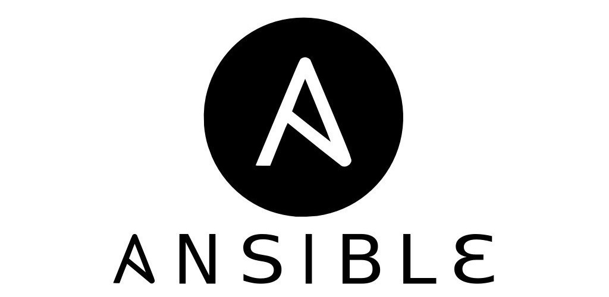

class: center, middle  ### .subtitle[Getting started] #### Thomas Rickard ??? A presentation on Ansible! --- name: agenda ## This presenation - Demo - Basics - What is Ansible - Basic commands - Modules - Playbooks - Hosts/Inventory - Role and ansible Galaxy - Sides - With Vagrant - With Docker - Workshop/examples - Livenviro - Simple S3 static site - Stor ??? Some notes --- class: center, middle, inverse # What is Ansible? --- Used for configuration, deployment and orchestration of machines and software. - Simple - Powerful - Agentless - Idempotent --- class: center, middle, inverse # Basic commands A few ad-hoc commands: --- class: center, middle, inverse # Modules --- .center - The backbone of Ansible - Like the standard library in a language - Used to control system resource, packages, files --- class: center, middle, inverse # Playbooks --- - Plain-text YAML - Human and machine readble - Used to build full apllication environments --- class: center, middle, inverse # Hosts/Inventory --- - Describe machines/resources - Can be: - Static list of servers - Ranges - Dynamic list of server with help --- class: center, middle, inverse # Roles and Ansible Galaxy --- class: center, middle, inverse # With Vagrant --- class: center, middle, inverse # With Docker --- ```javascript function helloWorld() { console.log(Hello World); } ```